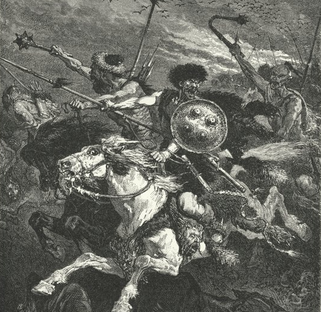
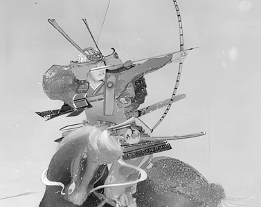
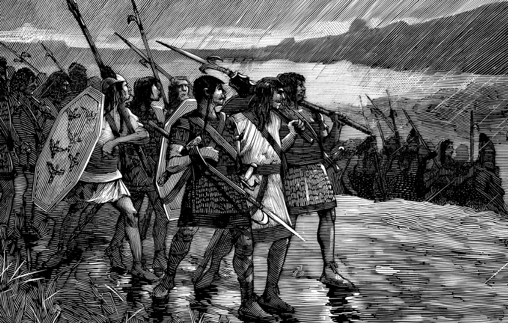
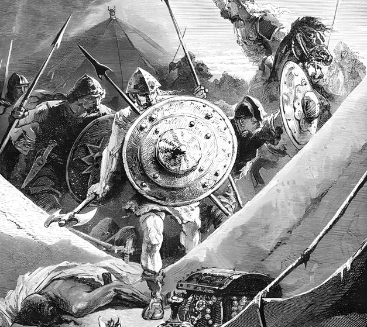

Arkea Orduları
Beş Kavim
Her kavmin kendine özgü kültürü, savaş biçimi ve kaderinin peşinde koştuğu bir dünya.

Baktriya · Butuan · Kutay
İnsanlar
En uyumlu ve dirençli kavim. Büyük ordular kurar, kıtalar boyunca at sürer, denizlere açılır. Atlı göçebelerden yerleşik krallıklara uzanan bir çeşitlilik.

Altınkıyı · Kham · Geşur
Elfler
En gelişmiş medeniyet ve kültüre sahip en eski kavim. Yeşimkent'in görkemli surlarından Geşur'un vahşi okçularına kadar uzanan bir yelpaze.

Ofir · Başmur
Cüceler
Zanaatkâr işçilikleri ve cesur denizcileriyle en eski uygarlıklardan biri. Ticaret imparatorlukları, gökcevher tüccarları ve görkemli mezar gelenekleri.

Aryana · Kehribarkıyı
Goblinler
Yağmacı deniz akınları, kabile savaşları ve nemeton sunu yerleri. Druid liderleri, köle ticareti ve orklara karşı amansız bir nefret.

Arakyosa · Aryana
Orklar
En vahşi ve saldırgan kavim. Yeraltı Kapılarının bilgisini kaybetmiş, dünya yüzeyinde dolaşmakla lanetlenmiş acımasız kabile savaşçıları.